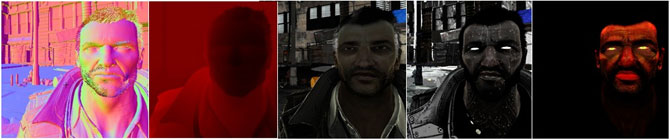

UDN
Search public documentation:
DeferredShadingDX11JP
English Translation
中国翻译
한국어
Interested in the Unreal Engine?
Visit the Unreal Technology site.
Looking for jobs and company info?
Check out the Epic games site.
Questions about support via UDN?
Contact the UDN Staff
中国翻译
한국어
Interested in the Unreal Engine?
Visit the Unreal Technology site.
Looking for jobs and company info?
Check out the Epic games site.
Questions about support via UDN?
Contact the UDN Staff
UE3 ホーム > 「Unreal Engine 3」における DirectX 11 > DirectX 11 におけるディファード・シェーディング
UE3 ホーム > 光源処理とシャドウ > DirectX 11 におけるディファード・シェーディング
UE3 ホーム > ライティングアーティスト > DirectX 11 におけるディファード・シェーディング
UE3 ホーム > 光源処理とシャドウ > DirectX 11 におけるディファード・シェーディング
UE3 ホーム > ライティングアーティスト > DirectX 11 におけるディファード・シェーディング
DirectX 11 におけるディファード・シェーディング
ドキュメントの概要: Daniel Wright により作成。
概要
GBuffers に保存されるマテリアル プロパティの視覚化。 （フルサイズの表示には画像をクリック）

ディファード・シェーディングによってレンダリングされた光源は、前方シェーディングによってレンダリングされた光源よりも 10 倍高速です。GDC 2011 (ゲーム デベロッパーズ カンファレンス 2011) の技術デモンストレーションでは、導入シーンの動的な光源が 123 あり、キャラクターの肌と髪の上を除いて、そのすべての光源でディファード・シェーディングが使用されました。ただし、ディファード・シェーディングは動的シャドウイングを高速化するものではありません (すでに「Unreal Engine 3」においてディファードされています)。したがって、動的シャドウイングの光源を何百ともてることにはならないのです。GDC 2011 の技術デモンストレーションのスクリーンショットです。キャラクターと環境を光源処理するために使用されている 123 個の光源のディフューズ寄与を示しています。
 GDC 2011 の技術デモンストレーションのスクリーンショットです。ディファード・シェーディングによって光源処理されたピクセルが緑色になっています。
GDC 2011 の技術デモンストレーションのスクリーンショットです。ディファード・シェーディングによって光源処理されたピクセルが緑色になっています。
 ディファード・シェーディングの大部分は透明な最適化として、標準的な前方シェーディングとともに使用されるように設計されています。現在のところ、シーンのどの部分でディファード・シェーディングを使用し、どの部分で前方シェーディングを使用しているかを示すツールはありません。ただし、このツールは非常に便利なため、作成を計画しています。
ディファード・シェーディングの大部分は透明な最適化として、標準的な前方シェーディングとともに使用されるように設計されています。現在のところ、シーンのどの部分でディファード・シェーディングを使用し、どの部分で前方シェーディングを使用しているかを示すツールはありません。ただし、このツールは非常に便利なため、作成を計画しています。
制限
- マテリアルが不透明で、Phong 光源処理モデルを使用し、サブサーフェス スキャタリングを使用しない。
- メッシュが、サポートされている光源チャンネル (Dynamic、Cinematic 1-3) のどれかを使用している。 BSP（バイナリ空間分割）、Static、Dynamicも同様のチャンネルとして扱われる。
- 光源が、サポートされている光源チャンネル (Dynamic、Cinematic 1-3) のどれかを使用している平行光源であるか、移動可能な点、スポットである。 BSP（バイナリ空間分割）、Static、Dynamicも同様のチャンネルとして扱われる。
- マテリアルのディフューズ値が 0 から 1 の間にクランプされる。
- マテリアルのスペキュラ値が 0 から 1 の間にクランプされる。
- マテリアルのスペキュラの累乗が 0 から 500 の間にクランプされる。
シネマティックス光源処理
また、bNonModulatedSelfShadowing または bSelfShadowOnly を使用する光源には、ディファード・シェーディングを使用する高速パスがあります。

{kind=link}